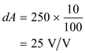

Closed loop gain of the amplifier is,
Substitute  for
for  and
and  for
for  .
.
Solve for feedback factor  .
.
Thus, feedback factor  is
is .
.
Closed loop gain of the amplifier is,
Substitute for and for .
Solve for feedback factor .
Thus, feedback factor is.
Find the de-sensitivity factor is,

Substitute for  and for
and for  .
.
Therefore de-sensitivity factor  is
is .
.
Find feedback factor,  for gain.
for gain.

Substitute 20 for  and for
and for  in the equation
in the equation
Solve for  in the equation.
in the equation.
Therefore feedback factor  is .
is .
Find the de-sensitivity factor.
Substitute  for
for  and
and  for
for  .
.

Therefore de-sensitivity factor  is.
is.
Find open loop gain uncertainty for the gain uncertainty of  .
.
Find the closed loop gain uncertainty for the gain uncertainty of  .
.

Substitute corresponding values.
Find the maximum allowable uncertainty for closed loop gain .
Substitute 0.08 for
Solve for 

Thus, the closed loop gain uncertainty is.
 .
. 

Find the closed loop gain uncertainty for the gain uncertainty of  .
.
Substitute corresponding values.
Find the maximum allowable uncertainty for closed loop gain  .
.
Substitute for in the equation.
Solve for  .
.
Thus, the closed loop gain uncertainty  is .
is .